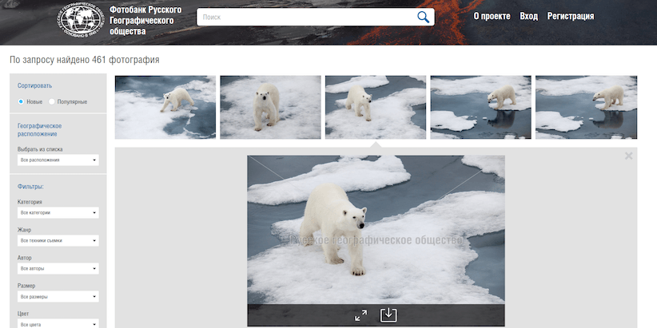

About
I'm very passionate about my work. I have positive response to any ideas and I know how to work in a team, how to convey my point of view calmly and reasonably. I write clean and concise code and I love well-written documentation. At work I prefer to show healthy perfectionism and attention to details, as work consists of many small things. I'm eager to learn a new technology if it appropriate for the task.
I have a desire to apply my skills in the best way and for me, it means to have a greater influence and to enrich other's lives. Not only because it makes me feel better about myself, but also because it's a great opportunity for solving new and challenging puzzles, which is always exciting.
Technical skills
PHP
5 years
>=5.3, 7.0
Frameworks: Symfony (^2.7, ^3.0), Yii2
Version control system: Git (Git flow)
Testing: Codeception, Selenium, PhpUnit, Mockery
SOLID, KISS, DRY
PSR
Databases
5 years
Relational: PostgreSQL, MySQL
Key-value: Redis, Memcached
Javascript
4 years
NodeJS, ReactJS, Webpack, ES6
Html5 & Css3
5 years
Responsive Web Development, HTML5 Boilerplate, SASS, SEO, Bootstrap
DevOps
Local environment setup: Docker, also - Vagrant, Ansible
Message oriented middleware
RabbitMQ, Gearman
Full-text search
Elasticsearch, Sphinx
Misc
Python, XDebug, BlackFire, Ubuntu, Z shell, PhpStorm
Portfolio

TASS Terminal
- News selling and distributing system
- Real-time app for TASS news feed subscribers
- Decoupled system, frontend uses backends API to authenticate user and gather data
- Backend using messaging queue to perform heavy tasks, like adding new material to search index, auto categorization and tagging
- Allowed delay after news have been published is about two seconds
- User recieve all updates through websocket
- Currently at beta-testing

RESH
- Federal project providing free online courses for students
- Creating a service for lessons publisher
- Lesson is uploaded as an archive, then it gets unpacked, video gets transcoded and prepared for streaming
- Creating a service for video transcoding based on ffmpeg
- Extracting the structured information about the tests(XML, IMS QTI), contained in the lesson, building a data model based on that data
- Currently on aprobation in region schools
- 
Photobank
- Stock photos of the Russian Geographical Society
- Designing a data model for the service of loading and storing photos
- Asynchronous processing of photos in queues (RabbitMQ)
- Defining programmatically the main palette of a photo, comparing photos, searching duplicates
- Frontend: development of drag'n'drop plugin, autoload scroll and slider
window.edu.ru
- Huge database of educational resources for students and teachers
- Migrating to Symfony2
- Caching and query optimization
- Full-text search using ElasticSearch
Relevant experience
September 2016 - present
Senior backend developer
TASS
- Involvement in the design and creation of new company applications using a service-oriented approach
- Support and refactoring code of the legacy app(up to 600rps)
- Development of a company webservices based on the Yii2 framework
- Code review and help for junior fellow employees
- Documenting technical solutions in Confluence
September 2014 - September 2016
Full-stack developer (middle)
Informika
- Development of web-applications and services based on the Symfony framework
- Participation in the discussions on the project architecture
- Refactoring of problem areas
- Writing project documentation
March 2012 - September 2014
Leading Information Systems Engineer
Institute for Spectroscopy RAS
- Development and refactoring code for official ISAN website
- Writing scripts for parsing data about employees and scientific publications from plain text
- Configuring and administering ISAN network hardware
- Ensuring the operability of the local network
June 2009 - March 2012
Engineer OMOI, Junior Researcher
Troitsk Institute for Innovation and Fusion Research (TRINITI),
Full time postgraduate study
Education
National Research Nuclear University MEPhI
Engineer-physicist, specialty "Physics of kinetic phenomena"
2003-2009